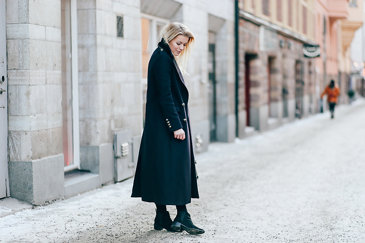

Outfit
Again with that coat
January 20, 2016
Let's welcome the new season with a warm coat. This text can be as long as you want.
Ei epäilystäkään, etteikö Zaran pitkähelmainen villakangastakki olisi ehdoton suosikkini nyt valiitseviin talvikeleihin. Ehkä ei niin paksu materiaaliltaan, mutta ai että miten ihanasti pitkät helmat lämmittävätkään sääriä! Onpa ollut takki niin runsaassa käytössä, että napitkin ovat alkaneet lentelemään. Näissä kuvissa vasta yksi pudonnut, mutta todellinen tilanne tällä hetkellä on, että toiselta puolelta uupuvat napit kokonaan eikä takkia saa tällä hetkellä edes kiinni, hrr!
Onneksi mua lykästi kerrankin Zarassa ja sain kassaan takana seisovalta kiltiltä myyjältä puuttuville napeille korvaajia tiedustellessani peräti kolme varanappia mukaan! Nyt enää tarvitsee kiikuttaa takki ompelijalle (jees, olen sen verran käsi näissä hommissa, että parempi antaa muiden hoidettavaksi..), jotta se on taas priimakunnossa ja valmiina käyttöön!
No doubt about my favourite coat of the season. I haven’t left the house without wearing my Zara coat since I got it and I’m not planning to not to wear the coat any time soon. I just love the long lenght of it, keeps my legs so warm! The only bad thing is, I’ve been wearing it so much that even the buttons are starting to fly away. As you can see, there’s one missing in these pictures, and actually I just dropped the other one a couple of days back. Now I can’t even close the coat anymore..
Luckily I managed to get some extra buttons from Zara when I went by and asked if they had some. The sweet girl behind the cashier handed me three new buttons, so as soon as I’ll take the coat to the sewer (yes, I can’t do stuff like that myself) it’ll be good to go again!

Toinen suosikki viimepäivinä on ollut myöskin Zarasta peräisinoleva pitkä harmaa pehmomekko, joka toimii samassa funktiossa kuin takkikin; sääriä lämmittämässä. Ihmeellisesti olen myös huomannut, että ohuemmatkin kunnon sukkikset on lämpimämmät verrattuna esimerkiksi farkkuihin tai nahkahousuihin. Ehkäpä musta tuleekin vielä mekkojen ja hameiden suosija, vaikka yleensä nimenomaan välttelen molempia talviaikaan..
Another favourite piece in my closet at the moment comes also from Zara. It’s this long grey dress thing that is super soft and surprisingly warm. Also I’ve been totally amazed how warm a pair of stocking can be compared to jeans or leather pants! I might even become a dress & skirt girl again even though I normally avoid both those during the wintertime..
coat / Zara (similar here, here, here)
dress / Zara (similar here, here)
bag / Louis Vuitton
shoes / NLY Shoes (similar here, here, here, here)
Muutoin viikko jatkuu täällä opiskelukuvioiden ja työtapaamisten merkeissä. Täytyy sanoa, että eilen alkanut markkinoinnin kandikurssi ei todellakaan vaikuta lastenleikiltä ja vähän on sellainen fiilis, että tulevasta keväästä taitaa tulla kiireisin sitten aikoihin. Mutta toisaalta kun valmistuminen häämöttää tunnelin päässä eikä kaukana enäää lainkaan, niin eiköhän tässä tsempata vaikka sitten silmät ristissä ja verenmaku suussa! Ja muutenkin nautin välillä kiireellisyydestä, jotenkin koen oloni kaikista tehokkaimmaksi aina silloin, kun mulla on monta rautaa tulessa samaan aikaan ja hommat on yksinkertaisesti saatava tehtyä. Onko kellään muulla samoja fiiliksiä?
Otherwise I’ll be continuing my week with a lot of studying and some work meetings. I have to say, the marketing course that I started yesterday isn’t to play with and I have a feeling that the upcoming spring is going to be busy, but well, at the same time I like busy! I feel like I’m the most effective when I’m busy and I get so much done then. And since my graduation is getting nearer, I feel like I’ve really got my motivation up at the moment! So, let’s just do this!